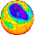

|
|

 HOME ANNOUNCEMENTS CONTACTS DATA INSTRUMENTS MAIN MENU MISCELLANEOUS PLOTS PUBLICATIONS SCIENCE WIND-PROFILER PRINCIPLES For this page: INTERNAL LINKS EXTERNAL LINKS |
THE NERC MST RADAR FACILITY AT ABERYSTWYTH
ACCESS TO DATA FROM THE INSTRUMENTS ASSOCIATED WITH THE FACILITY
|
|||||||
|
|
||||||||
|
|
 |
|
Data from all instruments associated with the Facility are freely
available to students and academic researchers through the British
Atmospheric Data Centre (BADC). People requiring the data for
commercial purposes should contact the
Facility Project Scientist directly. |
In order to gain access to the data through the BADC
Location of the data on the BADC For access to the data by ftp, connect to ftp.badc.rl.ac.uk and move to the relevant directory location shown below. For access through a web browser, simply click on the location name. Click here to find out more about the directory structures for the different data types. The following links are also provided for each data type:
Complementary datasets available through the BADC Links are given below for the locations of complementary datasets available through the BADC. Click here to find out more about these data sets.
|
||||
|
|
||||||||
|
Page maintained by
David Hooper Last updated 29th June 2004 | ||||||||